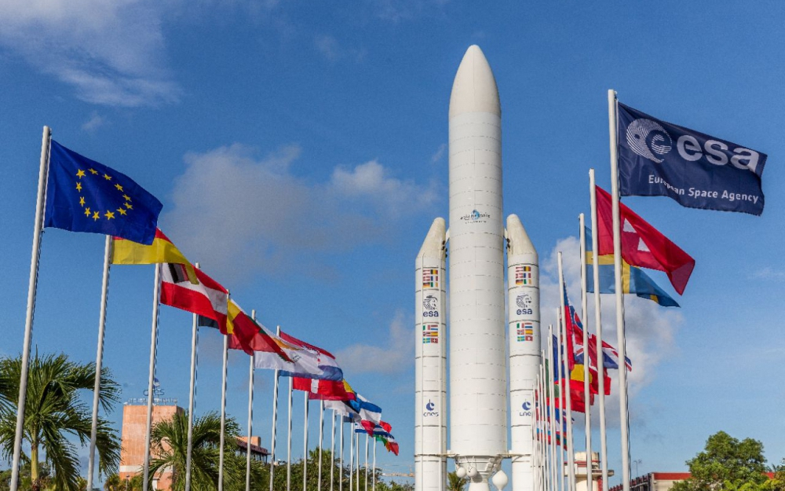

EXPERIENCE DE TRAVAIL DANS LE CENTRE NATIONAL D'ETUDES SPATIALES
-
Qui est CNES-CSG ?
Au Centre spatial guyanais, une quarantaine d'entités collabore pour permettre les lancements de fusées. Chacune a un rôle précis dans le fonctionnement du CSG, allant de la construction et du financement des installations de lancement jusqu'au décollage.
-
CNES (Centre national d'études spatiales)
Etablissement public à caractère industriel et commercial (EPIC), le CNES propose aux pouvoirs publics la politique spatiale de la France et la met en oeuvre dans 5 grands domaines stratégiques : Ariane, les Sciences, l’Observation, les Télécommunications et la Défense.
Le CNES emploie environ 2500 salariés sur ses sites de Toulouse, Paris et Kourou.
C’est en 1964 que le CNES s’implante en Guyane, pour la création du Centre spatial guyanais dont il est propriétaire. Aujourd’hui, ce sont environ 250 collaborateurs qui assurent les 5 missions principales suivantes au CSG :
-
Entreprises partenaires du CNES
Pour assurer la maintenance, l’exploitation et le fonctionnement du CSG, le CNES s’appuie sur des sous-traitants répartis dans 14 sociétés ou groupements.
-
Videlio IEC
J'ai intégrer l'entreprise Videlio IEC
VIDELIO – IEC Guyane fait partie des collaborateurs du Centre Spatial Guyanais qui conçoit, intègre, déploie et maintient des solutions et des systèmes audiovisuels.En tant qu’intégrateur audiovisuel propose des solutions globales et sur-mesure pour l’équipement des espaces de travail collaboratifs, les espaces d’accueil, culturels, de vente, de contrôle et de supervision.

-
Ma Mission
Durant ce stage on ma donnée differente mission qui sont les suivantes :
• Schématisation le réseau du SIC (Système d’infographie du CSG) et CDPI (Centre de diffusion et de production d’images)
• Configuration NAS Netgear (IP, RAID)
• Création script Batch de configuration carte réseau
• Création script Python pour analyse du Traffic réseau des caméras IP
• Configuration d'un switch Cisco (VLAN, Agrégation de liens, Trunk)
• Configuration des équipements de visioconférence (Polycom HDX7000 et Group 500)
• Importation des données d’un fichier Excel dans une base de données et exportation
Suite à un audit dont l’objectif principal est d’estimer le niveau de sécurité du Service Optique Vidéo (SOV) du CSG, le rapport révèle plusieurs anomalies.La solutions qui a etait proposer afin corrigé les anomalies et la configuration d'un windows server 2012
.Avant tout cela, des tests seront faits dans un environnement virtualisé.
J'ai donc participer au projet de la mise en place d'un Windows server 2012 pour le parc Informatique Optique Vidéo.J'ai du virtualisé l'environnement et les demandes suivantes :
• Mise en place Windows server 2012
• Mise en place des Services : Active directory, DHCP, DNS et WDS.
• Capture image Windows via Sysprep
• Mappage lecteur réseaux sur le Windows Server via les stratégies de groupes pour un poste précis
• Déploiement via GPO des logiciels sur les postes client Windows 10 connecter au domaine.
• Renforcé la politique des mots de passe et des comptes (règles de moindres privilèges)
• Activation du chiffrement Bitlocker sur tous les équipements le permettant.
• Activation du Secure Boot sur tous les postes et serveurs
• Configuration du pare feu Windows Server
• Configuration des postes Windows 10 clients et pare feu Windows avec les règles SSI données au préalable
-
Mon experience
Travailler chez Videlio IEC a été une expérience très agréable j'ai pue apprendre et approfondir mes connaissance. Les autres employés ont été très gentils et patients lorsqu'ils s agissaient de m'expliquer certains chose. Tout au long de cette expérience, j'ai appris à travailler avec les autres voir les differentes problemes dans le millieu du travail.
-
Mes Difficultés
Je n'ai pas recontrer de réel difficultés durant ce stage car c'est des choses que j'ai pue apprendre durant mon cursus scolaire.